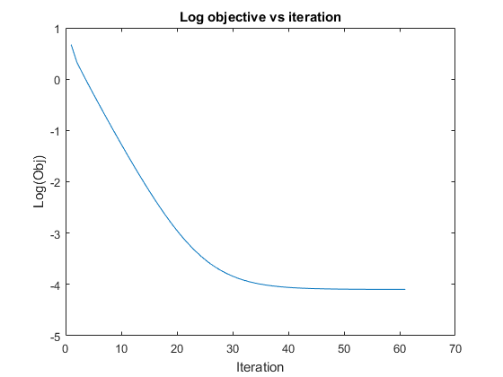
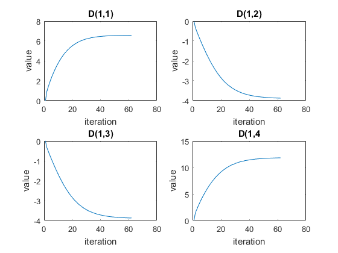

Que3
close all;
clear;
clc;
S0 = 1;
b = 0.1;
g = [1,0;0.866,0.5;0.5,0.866;0,1;-0.5,0.866;-0.866,0.5]';
Sg = [0.5045-0.0217i;0.6874+0.0171i;0.3632+0.1789i;0.3483+0.1385i;0.2606-0.0675i;0.2407+0.1517i]';
f = g.*g;
x_s = f(1,:);
y_s = f(2,:);
x_y = g(1,:).*g(2,:);
rng(2);
iter = 1;
max_iter = 100;
L = [rand(1),0;rand(1),rand(1)];
B = [L(1);L(2);L(4)];
J = zeros(6,3);
step = 0.1;
lambda = 0.05;
change = 1;
D_val = zeros(4,100);
objective = zeros(100);
while change > 1e-3
e = exp(-0.1*diag(g'*(L*L')*g));
r = abs(Sg)'-e;
J(:,1) = 0.2*((x_s*B(1)+x_y*B(2)))'.*e;
J(:,2) = 0.2*(x_y*B(1)+y_s*B(2))'.*e;
J(:,3) = 0.2*(y_s*B(3))'.*e;
obj = (r'*r);
objective(iter) = obj;
Z = J'*J;
B_new = B-step*((Z+lambda*diag(diag(Z)))\(J'*r));
change = norm(B_new-B);
B = B_new;
B(1) = max(B(1),0);
B(3) = max(B(3),0);
L = [B(1),0;B(2),B(3)];
iter = iter+1;
D = L*L';
D_val(:,iter) = D(:);
if iter >= max_iter
break;
end
end
error = abs(Sg)'-exp(-0.1*diag(g'*(L*L')*g));
mse = sum((error).^2);
D = L*L';
[V,E] = eig(D);
V_max = V(:,2);
ratio = E(2,2)/E(1,1);
figure();
plot(1:iter,log(objective(1:iter)));
xlabel('Iteration');
ylabel('Log(Obj)');
title('Log objective vs iteration');
figure();
subplot(2,2,1);
plot(1:iter,D_val(1,1:iter));
xlabel('iteration');
ylabel('value');
title('D(1,1)');
subplot(2,2,2);
plot(1:iter,D_val(2,1:iter));
xlabel('iteration');
ylabel('value');
title('D(1,2)');
subplot(2,2,3);
plot(1:iter,D_val(3,1:iter));
xlabel('iteration');
ylabel('value');
title('D(1,3)');
subplot(2,2,4);
plot(1:iter,D_val(4,1:iter));
xlabel('iteration');
ylabel('value');
title('D(1,4');
disp('Mean Square Error is ');
disp(obj);
disp('Matrix D is');
disp(D);
disp('Direction of maximum Diffusion is');
disp(V_max);
disp('Ratio of diffusion in principal direction to orthogonal direction is = ');
disp(ratio);
Mean Square Error is
0.0166
Matrix D is
6.5750 -3.8776
-3.8776 11.8224
Direction of maximum Diffusion is
-0.4688
0.8833
Ratio of diffusion in principal direction to orthogonal direction is =
3.0731
 